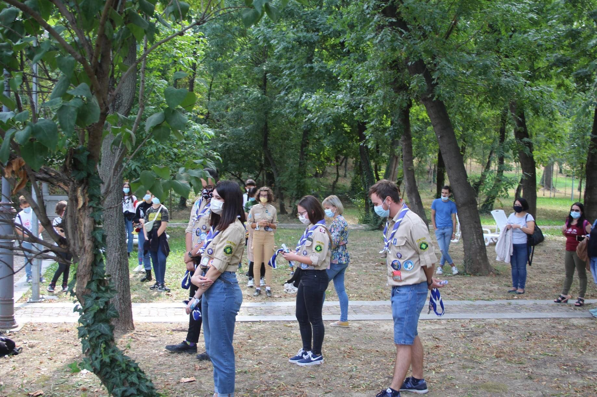

Prima mea experiență la cercetași

Acum aproximativ 1 an, am auzit de la Teo, despre cercetași, vedeam poze, amintiri și experiențe de acolo, auzeam și povești și ușor, ușor m-a convins doar prin ce povestea că vreau și eu. Îmi doream să știu din ce în ce mai multe, după realizând că pot să experimentez și să învăț tot ce auzeam, i-am spus că îmi doresc să vin și eu. Desigur eram în mijlocul anului și nu aveam cum, așa că m-am informat în toată perioada dinaintea pandemiei, dar și după, pentru că știam că se apropia momentul primului contact real cu cercetași despre care auzisem atâtea. Iar momentul a venit, pe 3 octombrie, DAC 2020 a anunțat primirea primilor aspiranți.
În drum spre Muzeul unde s-a ținut DAC, mă gândeam cum ar trebui să mă comport, eram emoționată, dacă păream prea încrezută? Sau prea arogantă și neinteresată, dacă nu era așa cum mă așteptam?
O mie de gânduri asemănătoare cu acestea îmi treceau prin cap, care s-au risipit în momentul în care am ajuns și am început să cunosc lume, fețe primitoare, prietenoase și cu care speram că într-o zi voi fi prietenă. DAC a început, foarte bine organizați și precauți, măsuri de protecție respectate și totul pus la punct, lideri ne-au îndrumat către locul unde aveau loc promisiunile celor ce aveau să devină oficial, exploratori, seniori sau lideri. Sincer, chiar dacă nu cunoșteam pe nimeni care și-a depus promisiunea așa bine, le-am simțit emoțiile, le-am simțit dedicarea și mândria de a fi cercetaș și era un semn clar că vreau așa ceva. După promisiuni, au început activitățile între timp am mai cunoscut oameni, am făcut și poze și cel mai important m-am simțit foarte bine și fiecare activitate m-a adus mai aproape de cercetași, deși nu aveau legătura între ele, se completau, am mimat, am povestit, am desenat și am câștigat cu viitoarea colegă de patrulă jocul „Ce spun cercetașii?”

La sfârșit Adi, liderul de la exploratori, ne-a vorbit un pic, apoi am ajutat la strângerea parțială a lucrurilor și am primit indicații pentru săptămânile viitoare, ne-am împărțit în patrule, iar eu și patrula mea, am plecat să ne cunoaștem mai bine și să mâncăm. În final, vreau să mulțumesc primirii, instruiri și primelor experiențe de viitoare cercetașă și de abia aștept să particip la cât mai multe astfel de experiențe și să vă cunosc mai bine!
Ana Leuca, aspirant la explo